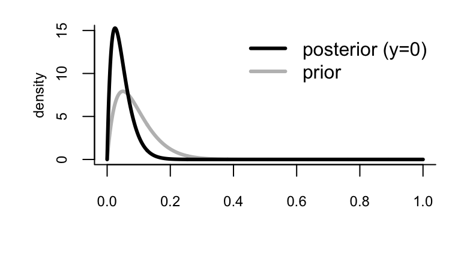
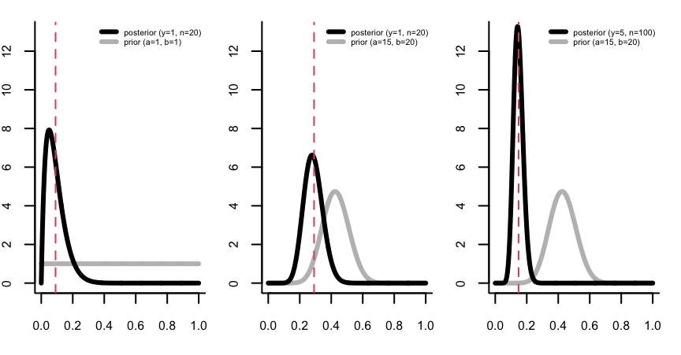
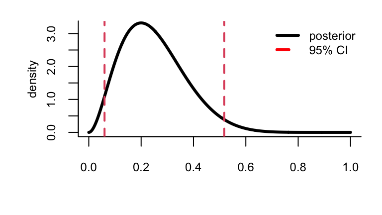

VectorByte Methods Training
Introduction to Bayesian Statistics
Introduction to Bayesian Statistics
Learning Objectives
- Understand the basic principles underlying Bayesian modeling methodology
- Introduce how to use Bayesian inference for real-world problems
- Introduce computation tools to perform inference for simple models in R (how to turn the Bayesian crank)
What is Bayesian Inference?
In the Bayesian approach our probabilities numerically represent rational beliefs.
Bayes rule provides a rational method for updating those beliefs in light of new information and incorporating/quantifying uncertainty in those beliefs.
Thus, Bayesian inference is an approach for understanding data inductively.
Recall: Bayes Theorem
Bayes Theorem allows us to relate the conditional probabilities of two events \(A\) and \(B\): \[ \text{Pr}(A|B) = \frac{\text{Pr}(B|A)\text{Pr}(A)}{\text{Pr}(B)} \]
What is Bayesian Inference?
We can re-write Bayes rule in terms of our parameters, \(\theta\) and our data, \(Y\): \[\begin{align*} \text{Pr}(\theta|Y) & = \frac{\text{Pr}(Y|\theta)\text{Pr}(\theta)}{\text{Pr}(Y)} \end{align*}\]
The LHS is the main quantity of interest in a Bayesian analysis, the posterior, denoted \(f(\theta|Y)\): \[ \overbrace{f(\theta|Y)}^\text{Posterior} \propto \overbrace{\mathcal{L}(\theta; Y)}^\text{Likelihood} \times \overbrace{f(\theta)}^\text{Prior} \]
Bayesian methods provide
- models for rational, quantitative learning
- parameter estimates with good statistical properties
- estimators that work for small and large sample sizes
- parsimonious descriptions of data, predictions for missing data, and forecasts for future data
- a coherent computational framework for model estimation, selection and validation
Classical vs Bayesian
The fundamental differences between classical and Bayesian methods is what is fixed and what is random in an analysis.
| Paradigm | Fixed | Random |
|---|---|---|
| Classical | param (\(\theta\)) | data (\(Y\)) |
| Bayesian | data (\(Y\)) | param (\(\theta\)) |
Why/Why Not Bayesian Statistics?
Pros
- If \(f(\theta)\) & \(\mathcal{L}(\theta; Y)\) represent a rational person’s beliefs, then Bayes’ rule is an optimal method of updating these beliefs given new info (Cox 1946, 1961; Savage 1954; 1972).
- Provides more intuitive answers in terms of the probability that parameters have particular values.
- In many complicated statistical problems there are no obvious non-Bayesian inference methods.
Why/Why Not Bayesian Statistics?
Cons
- It can be hard to mathematically formulate prior beliefs (choice of \(f(\theta)\) often ad hoc or for computational reasons).
- Posterior distributions can be sensitive to prior choice.
- Analyses can be computationally costly.
Steps to Making Inference
- Research question
- Data collection
- Model \(Y_i \approx f(X_i)\)
- Estimate the parameter in the model with uncertainty
- Make inference
The difference between Classical and Bayesian lies in step 4:
- Classical uses maximum likelihood estimatation
- Bayesian derives a posterior distribution.
Example: Estimating the probability of a rare event
Suppose we are interested in the prevalence of an infectious disease in a small city. A small random sample of 20 individuals will be checked for infection.
- Interest is in the fraction of infected individuals \[ \theta \in \Theta =[0,1] \]
- The data records the number of infected individuals \[ y \in \mathcal{Y} =\{0,1, \ldots, 20\} \]
Example: Likelihood/sampling model
Before the sample is obtained, the number of infected individuals is unknown.
- Let \(Y\) denote this to-be-determined value
- If \(\theta\) were known, a sensible sampling model is \[ Y|\theta \sim \mathrm{Bin} (20, \theta) \]

Example: Prior
Other studies from various parts of the country indicate that the infection rate ranges from about 0.05 to 0.20, with an average prevalence of 0.1.
- Moment matching from a beta distribution (a convenient choice) gives the prior \(\theta \sim \mathrm{Beta} (2,20)\)
Example: Posterior
The prior and sample model combination: \[\begin{align*} \theta & \sim \mathrm{Beta} (a,b) \\ Y|\theta & \sim \mathrm{Bin} (n, \theta) \end{align*}\] and an observed \(y\) (the data), leads to the posterior \[ p(\theta|y)= \mathrm{Beta}(a+y, b+n-y) \]
Example: Posterior
For our case, we have \(a=2\), \(b=20\), \(n=20\).
If we don’t find any infections (\(y=0\)) our posterior is: \[ p(\theta |y=0)= \mathrm{Beta}(2, 40) \]
Example: Sensitivity Analysis
How influential is our prior? The posterior expectation is \[ \mathrm{E}\{\theta|Y=y\} = \frac{n}{w+n} \bar{y} + \frac{w}{w+n} \theta_0 \] a weighted average of the sample mean and the prior expectation: \[\begin{align*} \theta_0 & = \frac{a}{a+b} ~~~~ \rightarrow \text{ prior expectation (or guess)} \\ w & = a + b ~~~~ \rightarrow \text{ prior confidence} \end{align*}\]
Example: A non-Bayesian approach
A standard estimate of a population proportion, \(\theta\) is the sample mean \(\bar{y} = y/n\). If \(y=0 \rightarrow \bar{y} = 0\).
Understanding the sampling uncertainty is crucial (e.g., for reporting to health officials).
The most popular 95% confidence interval for a population proportion is the Wald Interval: \[ \bar{y} \pm 1.96 \sqrt{\bar{y}(1-\bar{y})/n}. \] This has the correct asymptotic coverage, but \(y=0\) is still problematic!
Conjugate Bayesian Models
Some sets of priors/likelihoods/posteriors exhibit a special relationship called conjugacy: when posterior and prior distributions have the same form.
E.g., in our Beta-Binomial/Bernoilli example: \[\begin{align*} \theta & \sim \mathrm{Beta} (a,b) \\ Y|\theta & \sim \mathrm{Bin} (n, \theta) \\ \theta | Y & \sim \mathrm{Beta}(a^*, b^*) \end{align*}\]
Are all posteriors in the same family as the priors? No
Conjugacy is a nice special property, but most of the time this isn’t the case.
Usually getting an analytic form of the posterior distribution can be hard or impossible.
What do you do with a Posterior?
- Summarize important aspects of the posterior
- mean, median, mode, variance…
- Check sensitivity of posterior to prior choice
- Say what range of parameters is consistent with the observed data given our prior information
- Make predictions
Posterior Summaries (point)
For the Beta-Binomial model, we found that \[ p(\theta | y)= \mathrm{Beta}(a+y, b+n-y). \] We can calculate multiple summaries exactly, for example: \[\begin{align*} \mathrm{mean}= \mathrm{E}[\theta|Y] & = \frac{a+y}{a+b+n} \\ \mathrm{mode}(\theta|Y) & = \frac{a+y-1}{a+b+n-2} ~~~ \dagger \end{align*}\]
\(\dagger\) a.k.a. the maximum a posteriori estimator (MAP)
Prior Sensitivity
The posterior expectation can be written as a weighted average of information from the prior and the data \[ \mathrm{E}\{\theta |Y=y\} = \frac{n}{a + b +n} \bar{y} + \frac{a+b}{a+b+n} \theta_0. \] Thus \(a\) and \(b\) can be interpreted here as prior data where \(a\) is the number of prior successes and \(a+b\) is the prior sample size. When \(n\gg a+b\) most of our information comes from the data instead of the prior.
Visualizing the prior vs. posterior
We can also visually check for sensitivity, since we don’t have general analytic approaches.
Confidence Regions
An interval \([l(y), u(y)]\), based on the observed data \(Y=y\), has 95 % Bayesian coverage for \(\theta\) if \[ P(l(y) <\theta < u(y)|Y=y)=0.95 \] The interpretation: it describes your information about the true value of \(\theta\) after you have observed \(Y=y\).
Such intervals are typically called credible intervals, to distinguish them from frequentist confidence intervals. Both are referred to as CIs.
Quantile-based (Bayesian) CI
Perhaps the easiest way to obtain a credible interval is to use the posterior quantiles.
To make a \(100 \times (1-\alpha)\) % quantile-based CI, find numbers \(\theta_{\alpha/2}<\theta_{1- \alpha/2}\) such that
- \(P(\theta <\theta_{\alpha/2} |Y=y)=\alpha/2\)
- \(P(\theta >\theta_{1-\alpha/2} |Y=y)=\alpha/2\)
The numbers \(\theta_{\alpha/2},\theta_{1- \alpha/2}\) are the \(\alpha/2\) and \(1-\alpha/2\) posterior quantiles of \(\theta\).
Example: Binomial sampling + uniform prior
Suppose out of \(n=10\) conditionally independent draws of a binary random variable we observe \(Y=2\) ones (successes).
Using a uniform prior distribution (a.k.a., \(\mathrm{Beta}(1,1)\)) for \(\theta\), the posterior distribution is \(\theta | y=2 \sim \mathrm{Beta}(1+2,1+10-2)\).
A 95% CI from the 0.025 and 0.975 quantiles of this beta:
The posterior probability that \(\theta \in [0.06, 0.52]\) is 95%. BUT, there are \(\theta\)-values outside the CI that have higher probability [density] than points inside!
Alternative: HPD region
A \(100 \times(1-\alpha)\) % highest posterior density (HPD) regions is the part of parameter space, \(s(y)\), such that:
- \(P(\theta \in s(y) |Y=y)= 1-\alpha\)
- If \(\theta_a \in s(y)\) and \(\theta_b \notin s(y)\) then \(P(\theta_a |Y=y)>P(\theta_b |Y=y)\)
\(\Rightarrow\) all points inside the HPD region have higher probability density than those outside.
We collect the highest density points with cumulative density greater that \(1-\alpha\):

The 95 % HPD region is [0.04, 0.48] which is narrower than the quantile-based CI, yet both contain 95 % probability.
Exercise: Is a treatment for cancer effective?
We have data on \(n\) cancer patients that have been given a treatment. Our outcome variable is whether or not it was ``effective’’:
| Patient | Effectiveness | Numerical Data |
|---|---|---|
| 1 | N | 0 |
| 2 | N | 0 |
| 3 | Y | 1 |
| \(\vdots\) | \(\vdots\) | \(\vdots\) |
The appropriate sampling model for each patient is a Bernoilli: \[Y_i|\theta \stackrel{iid}{\sim} f(Y|\theta) = \text{Bern}(\theta)\] where \(\theta\) is the success rate of the treatment. Write down the likelihood for the \(n\) patients. Then, assuming a \(\mathrm{Beta}(a,b)\) prior for \(\theta\), find the posterior distribution for \(\theta|Y\). Does this look familiar?
Next Steps
Next you’ll complete a practical where you conduct a conjugate Bayesian analysis for the mean of a normal distribution on the midge data introduced in the likelihood chapter. You’ll also visualize the effect of different prior choices on the posterior distribution.